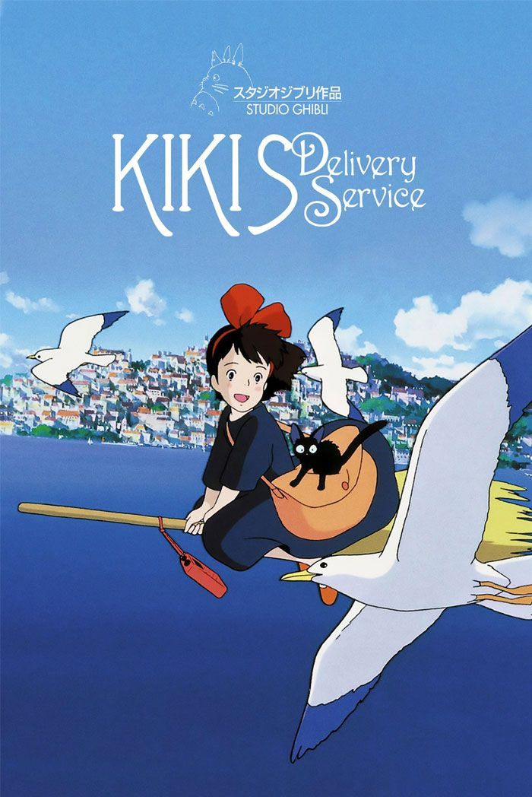

Director: Hayao Miyazaki | Studio: Studio Ghibli
"Finding your own inspiration in a big new city."
Kiki is a 13-year-old witch. In her family, witches have to leave home for a year to learn how to live on their own. She flies to a beautiful new city by the sea with her talking black cat, Jiji. Since her only magic power is flying, she starts a delivery business. But growing up is hard, and Kiki has to learn how to believe in herself when things get tough.
← Back to Hub